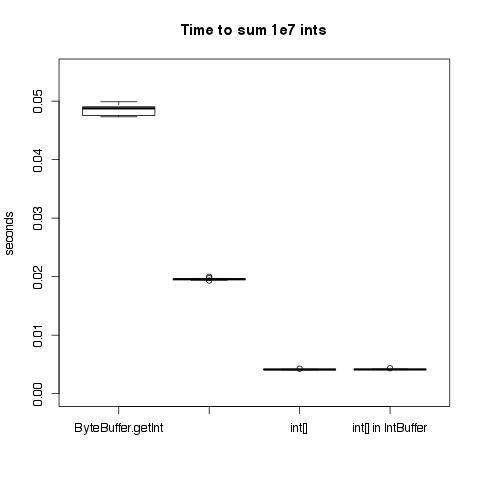
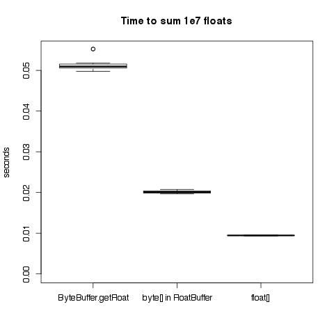

UPDATE 7-1-2013 Andre Silva made a great suggestion to try direct byte buffers (and he even sent a pull request). There is a big improvement, so I’ve updated my results below.
I just heard about Rex Kerr’s new library for micro-benchmarks in Scala, Thyme, and I thought I could give it a try exploring some questions I’ve always had about the performance of Java’s ByteBuffers. (I got interested in this idea through work we’re doing at Quantifind on Spark, as a way to avoid the cost of serializing & deserializing data, but the idea is still in the very early stages.) Since I’m interested in performant code for numerical computation, I decided to start with a really simple task of summing an array of floats vs. summing floats that are read out of a ByteBuffer. It sounds simple enough, but I actually learned a ton about profiling, the JIT, and the cost of using interfaces. I’ll go into more detail on some of the biggest puzzles & surprises, but here are the key take-aways:
Thyme is a great tool and its super easy to use. I also really enjoyed Rex’s slides from Scala Days 2013.
Reading ints & floats from view buffers is faster than calling
ByteBuffer.getFloat/ByteBuffer.getIntdirectly.Reading from direct byte buffers is much faster than reading from normal (on-heap) byte buffers — the performance is very close to normal arrays. (The rest of the post only considers normal byte buffers)
Reading from an on-heap
FloatBufferinstead of anArray[Float]takes roughly twice as long. This may sound terrible, but this is still tons faster than any data structures in the collections library. Furthermore, it could be insignificant if you’re doing any real calculations — the difference dropped to 15% if I added a call tomath.log()on each float.Using interfaces has some tricky performance penalties because of the optimizations done by the JIT. (Rex mentions this on slide 28). What I learned is that hiding one implementation behind an interface doesn’t have any performance impact — but there is a big impact if you have multiple implementations that are in active use. I didn’t understand this at first, and got really confusing results from my micro-benchmarks — more on that below.
In the end I ran tests for both ints & floats. The final benchmarks are summarized in these graphs. I’ll explain the benchmarks for floats in more, but the same applies to both cases. Again, from here out, I’m only talking about reading floats from normal, on-heap byte buffers.


The Experiment
The basic test was very simple — compare the time required to sum 10 million floats stored in an array vs. 10 million floats
stored in a byte buffer. When reading floats from a byte buffer, you can either call bb.getFloat(idx) or first get a FloatBuffer
view of the byte buffer, and then call fb.get(idx), so I tried both. I wanted to be sure that I was measuring the cost of
reading the floats, not method calls or closures
turned into anonymous classes, etc., so I wrote my benchmark as ugly while loops.
Thyme gave me a nice report on each version, that was simple to read and full of information (even confidence intervals!):
Benchmark for raw arrays (60 calls in 1.127 s)
Time: 9.372 ms 95% CI 8.839 ms - 9.904 ms (n=20)
result = 1.19841533E14
Benchmark for byte buffer (20 calls in 957.8 ms)
Time: 48.20 ms 95% CI 46.05 ms - 50.34 ms (n=19)
result = 1.19841533E14
Benchmark for float buffer (60 calls in 1.177 s)
Time: 19.52 ms 95% CI 18.49 ms - 20.55 ms (n=20)
result = 1.19841533E14
Reading from an array of floats was the best, with the FloatBuffer & ByteBuffer coming in at 2x & 5x respectively. Getting these results was so easy, I started playing around with lots of others tasks, like taking the sum of the logs instead of the sum, or wrapping the ByteBuffers with a wrapper class to make them more Scala-friendly. Then I thought I could at least clean up the repitition of those ugly while loops by creating a common interface, and that’s where I got myself into trouble.
Profiling Interfaces
After confirming that wrapping an array or a byte buffer in another class had no significant effect on performance, I thought I might as
well give those wrappers classes a common interface, so I only needed to write my while loops once. So I made a simple ArrayLike trait
with just apply, update, and size, all I needed in my while loops. I knew there was a good chance this would slow my code down, but
I figured every approach would probably suffer the same effect.
I ran the benchmarks, and then my troubles began …
Benchmark for wrapped array (140 calls in 1.325 s)
Time: 9.425 ms 95% CI 8.903 ms - 9.947 ms (n=20)
result = 1.19841533E14
Benchmark for float array wrapped in FloatBuffer (140 calls in 1.778 s)
Time: 12.60 ms 95% CI 12.04 ms - 13.15 ms (n=20)
result = 1.19841533E14
Benchmark for byte array wrapped in FloatBuffer (20 calls in 1.801 s)
Time: 89.99 ms 95% CI 87.53 ms - 92.46 ms (n=20)
result = 1.19841533E14
What happened?! How come the interface didn’t slow down the loop over the array, but it completely destroyed the loop over the byte buffer?
I spent a lot of time looking into various theories to explain what was going on. I did some reading on the JIT, tried to understand the output of
-XX:+PrintCompilation, spent a long time figuring out how to get -XX:+PrintInlining to work (you have to add -XX:+UnlockDiagnosticVMOptions),
explored lots of different ways that Thyme lets you profile code, read up on specialization, and tried all sorts of permutations of my code. I had basically given up,
and was just putting together some clean examples to ask for help from Rex himself, when I stumbled upon the solution.
The key is to look at the code from the perspective of the JIT. If an interface has only one implementation, static analysis of the whole program could eliminate the interface completely. But if there are multiple implemenations of an interface, than whole-program analysis can’t eliminate the interface, and so all uses should pay the price of dynamic dispatch.
However, the JIT is not whole-program analysis. It just knows about code that has been run so far in the active JVM. So when I ran my first benchmark on the array-wrapper, as far as the JIT was concerned, there was just one implementation, so it could remove the interface completely. Then the JIT needed to undo its elimination of the interface for subsequent benchmarks, and put dynamic dispatch back in. Indeed, if I ran the array-wrapper benchmark again, after the other benchmarks, its speed drops like the others. (A direct while loop on the array keeps the original performance, regardless of what order its run in.)
So what does this mean for running benchmarks that compare multiple implementations of an interface? You have to know whether a JVM will only have one active implementation, or if multiple implementations will live side-by-side.
- If you want multiple implementations to live side-by-side in the same JVM, then you should run your tests in one JVM, but be sure to warm
up all interfaces before running your test. Note that if you first “warm” up each benchmark with
thyme.Warm, and then run the benchmarks, you’ll get the correct timing for each implementation.thyme.pbenchOff(for doing a head-to-head comparison of two methods) sort of does the right thing — it will at least warn you that it senses something is wrong with the message “Individual benchmarks not fully consistent with head-to-head (p ~= 0)”. But, it can only be used to compare two methods, and I’ve observed that the big performance hits come with three or more implementations. - If you will only have one implementation active in the JVM at a time (eg., you want to do a complete swap of one implementation for another), then you cannot profile both in the same JVM. Even if you warm up both implementations first, the results will be very misleading. The benchmarks would include the cost of dynamic dispatch, which won’t exist in actual use. I suspect the relative order of the implementations won’t change, but the magnitude of the difference could be dramatically different. For example, in my simple test case of summing floats, the difference goes from 2x to a few percent.
Dynamic Dispatch and Type Classes
Just for completeness, I figured I should try out the common alternatives to my method for creating a general sum method. I tried both moving
the method into the ArrayLike interface, and also “enriching” the classes with the method via Type Classes. With both methods, I had a choice
of where to put the implementation. Should I put the implementation directly in the ArrayLike trait? Or should I make sum an abstract method,
and provide a definition specific to each class? I won’t repeat all those while loops again here, but I want to at least show the signatures for
the Type Class version, as that is probably unfamiliar to some readers:
There was a huge difference between putting the implementations in ArrayLike versus having one implementation per concrete class. This makes
a lot of sense — by putting one implementation per concrete class, I’ve moved dynamic dispatch out of the inner loop. The 100 ms performance
hit doesn’t come from one dynamic dispatch call — it comes from 10 million of them. Remember, though, that even though I can get the performance back
by writing three different implementations, I’m back to my original problem of repeating code.
The Type Class versions performed basically the same as adding the method to ArrayLike, with the same discrepancy between the “generic” and
“specific” versions. I wouldn’t take this as an authoritative comparison of the two methods, since that’s not the main purpose of this benchmark,
but it fits my intuition that they should be roughly comparable.
Reference
I did a lot of searching to try to figure out the performance discrepancies before I figured what was going on with the interface methods. Its tough to find good references to understand the JIT, so I’m including the best references I found & some VM args to use. Full disclosure: I still find most of the output from JIT complitation really confusing, but after these reads I’m better off than where I started.
- A great gist by Kris Mok describing the output of
PrintCompilation. - How to write really fast Java code by Niklas Schlimm.
- So You Want to Write a Micro-Benchmark on the Oracle wiki.
-XX:+PrintCompilationto get the JIT to print compilation events.-XX:+UnlockDiagnosticVMOptions -XX:+PrintInliningas JVM args to see method inlining.
I’ve got the complete version of my code on Github. Warning: the code is pretty ugly, partly out of necessity (I had to repeate those ugly while loops) and partly because I was frantically trying everything possible during my confusion. (Note that the link is to a branch I’ve created just for this blog post — I’m going to rip most of it out in master.)